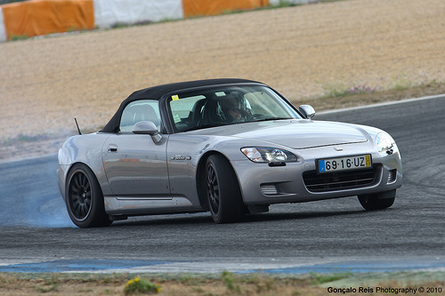

Utter Reponsiveness
Learn more about how the s2000 gives you a sense of utter control and response
Raw, unfiltered, Pure
The driving experience of the s2000 is like no other. It gives the driver racecar like responses thanks to its steering and suspension system
The wail from the 9000 rpm capable engine between lightning fast shifts and aggressive rev matching is spine tingling
Learn more about how the s2000 gives you a sense of utter control and response
Learn more about how the S2000 fills you with emotion when you drie it